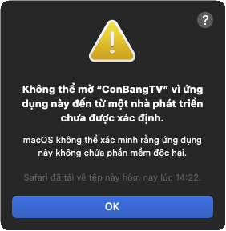
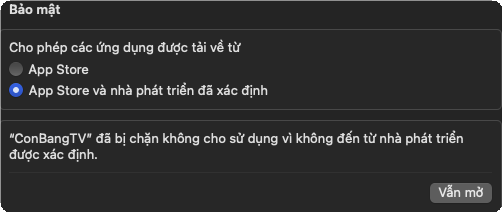
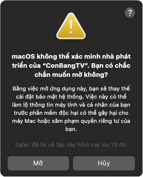

Android TV · Điện thoại · iPad · iPhone · Windows · Mac · Linux
Phim hay từ nhiều trang, gom về một chỗ.
Côn Bằng TV gom phim mới từ nhiều trang web về một trang chủ gọn gàng: phim trùng gộp làm một, video giật thì đổi server bằng một nút, trang bị nhà mạng chặn vẫn vào được. Xem trên tivi, điện thoại, iPad hay máy tính — bấm remote, chạm màn hình hay dùng chuột, bàn phím đều thuận tay.
Nhà đã có app? Mở menu, chọn Mời bạn bè cài app: mã này hiện thật to kèm mã QR để khách chụp mang về. Bản iPad, Mac, Windows và Linux có cùng màn này trong Cài đặt.
Tivi không có CH Play?
Tải tệp APK bằng điện thoại hoặc máy tính, gửi sang tivi bằng app Send Files to TV hoặc chép qua USB, rồi mở tệp bằng trình quản lý tệp của tivi.
Điện thoại Android
Cùng tệp APK đó cài được trên điện thoại: cầm dọc thì menu gọn vào nút ☰, lưới phim 3 cột; xem phim luôn nằm ngang. Cầm ngang hay máy tính bảng thì dùng bố cục như tivi.
Cần gì trên tivi
Tivi hoặc TV box chạy Android 5.0 trở lên (Android TV, Google TV, box Android thường). Dùng remote, chuột bay, bàn phím hay màn hình cảm ứng đều được.
Tính năng
Mọi thứ trong tầm một nút bấm.
Không phải mở từng trang web, không phải dò quảng cáo. App đọc thẳng danh sách phim, tập và server từ các trang rồi bày lên một màn hình dễ bấm.
Một trang chủ, nhiều nguồn phim
Phim mới từ các trang được gom về một chỗ, phim trùng gộp làm một, xếp theo thứ bạn đang xem dở.
Remote, cảm ứng hay chuột đều được
Tivi: mũi tên để đi, OK để chọn, giữ phím để tua nhanh dần. Điện thoại, iPad: chạm và vuốt. Máy tính: chuột, bàn phím, phím tắt.
Giật thì đổi server ngay
Nhấn ▼ khi đang xem: mọi server hiện ra kèm điểm của lần xem trước («mượt», «hay giật, mở 19 s»), xem tiếp đúng giây đang dừng.
Vào được cả khi bị chặn
Vượt chặn nhà mạng và DNS mã hoá bật sẵn. Không cần VPN. Có thêm proxy SOCKS5 / Shadowsocks cho ai cần.
Có tập mới là biết
Bấm Theo dõi một lần. Tập mới hiện ở đầu trang chủ kèm số tập mới, ở trang nào ra trước cũng thấy.
Một ô tìm cho mọi trang
Gõ tên phim, có dấu hay không dấu đều được. App hỏi cùng lúc mọi trang, trang nào trả lời trước hiện trước.
Mỗi người một hồ sơ
Lịch sử riêng, khoá bằng mã PIN, hồ sơ trẻ em chỉ có hoạt hình hợp tuổi, giới hạn giờ xem và giờ đi ngủ.
Xem dở ở tivi, xem tiếp trên iPad
Các máy trong nhà tự đồng bộ lịch sử, chỗ đang xem và phim theo dõi với nhau, không qua máy chủ nào.
Điểm IMDb ngay trên ảnh phim
Nhãn điểm IMDb trên từng phim, mục «Điểm IMDb cao» và nút xếp theo điểm để chọn phim nhanh hơn.
Trang chủ
Mở app là thấy đúng phim mình hay xem.
Hàng Có tập mới và Xem tiếp luôn ở đầu: OK là phát tiếp đúng chỗ.
Hàng gợi ý Giống «phim vừa xem», theo thể loại bạn hay xem, thuyết minh / lồng tiếng mới.
Phim có ở nhiều trang chỉ hiện một lần, ghi «3 nguồn»; vào phim là chọn được nguồn.
Nhấn phím Menu trên một hàng để ẩn hoặc đổi chỗ hàng đó; tự thêm hàng theo loại phim, nước, thể loại, ngôn ngữ.
Trang nào chậm hay lỗi thì dùng bản đã lưu, không bắt cả trang chủ chờ.
Vượt chặn nhà mạng bật sẵn: chia nhỏ gói đầu tiên để máy soi của nhà mạng không đọc được tên trang; trang nào vẫn không lọt thì app tự lên Mức 2 cho riêng trang đó.
DNS mã hoá (DoH / DoT) bật sẵn: nhà mạng không đổi được địa chỉ trang, lần lượt NextDNS → Cloudflare → Google.
Proxy SOCKS5 / Shadowsocks nếu bạn có máy chủ riêng; dán link ss:// là tự điền.
Trang đổi tên miền thì app tự đổi theo khi trang báo chuyển.
App đọc phim từ các trang công khai dưới đây. Mở Đổi trang phim là app đo ngay từng trang: mở mất bao lâu, có bao nhiêu phim, trang nhanh nhất có dấu ★.
yanhh3d · hoathinh3d · hhkungfu
Hoạt hình 3D Trung Quốc: tiên hiệp, kiếm hiệp, tu tiên. Vietsub và thuyết minh, nhiều phim có bản 4K. Có lịch chiếu theo ngày.
phimmois.fun
Phim bộ, phim lẻ Hàn, Trung, Âu Mỹ, Nhật, Thái và hoạt hình. Vietsub, thuyết minh, lồng tiếng, song ngữ có phụ đề.
KKPhim · mephim
Kho phim lớn đủ thể loại, phim chiếu rạp, TV Shows. Video app tự phát và tự bỏ quảng cáo chèn trong phim.
NguonC
Khoảng 33 000 phim, hay có tập mới sớm. Lọc theo thể loại, quốc gia, thuyết minh, lồng tiếng.
VSMOV
Mạnh phim lồng tiếng, thuyết minh và bản 4K.
CLB Phim Xưa
Phim Hồng Kông, TVB, kiếm hiệp cũ — chọn theo thể loại hoặc thập niên.
Server dự phòng
Trình phát của trang hỏng? App tìm cùng phim, cùng tập trên KKPhim và NguonC rồi thêm vào bảng server.
Trang đổi tên miền
App tự đổi theo khi trang báo chuyển nhà; hoặc gõ tên miền mới ở Đổi trang phim → Thêm trang khác.
Trang cùng kiểu
App nhận trang theo mẫu giao diện, nên trang khác cùng kiểu thường chạy luôn khi thêm vào danh sách.
Côn Bằng TV không liên kết với các trang trên và không lưu trữ phim — xem Quyền riêng tư và dòng miễn trừ cuối trang.
Tải về
Máy nào trong nhà cũng cài được.
Tivi phòng khách, iPad trong phòng ngủ, máy tính ở bàn làm việc — cùng cách dùng, cùng tính năng. Tắt tivi ở tập 12 phút 18, mở iPad là xem tiếp đúng phút đó. Mọi link dưới đây luôn tải bản mới nhất.
Android TV và TV box
Android 5.0 trở lên · tệp APK khoảng 1,3 MB
Điều khiển trọn bằng remote; có con trỏ ảo khi cần bấm vào trang web.
Cài. Bấm đúp vào tệp, App Center (Cài đặt phần mềm) mở ra → Cài đặt → nhập mật khẩu máy. Hoặc trong Terminal: sudo apt install ./ConBangTV-Linux.deb
Mở app. Tìm «Côn Bằng TV» trong danh sách ứng dụng. Bản sau app tự tải và cài (hệ thống hỏi mật khẩu máy).
Máy có card đồ hoạ Intel / AMD: cài thêm gstreamer1.0-vaapi để giải mã video bằng phần cứng, đỡ tốn CPU.
Cài trên Mac
Mở lần đầu trên Mac.
Côn Bằng TV không mua chứng chỉ của Apple nên macOS chặn ở lần mở đầu tiên. Cho phép một lần là xong — các bản sau app tự cập nhật.
Tải bản Mac. Tải tệp ConBangTV-Mac.zip — macOS 12 trở lên, máy Intel hoặc chip Apple.
Giải nén, kéo vào Ứng dụng. Mở tệp .zip trong thư mục Tải về, kéo ConBangTV vào thư mục Ứng dụng (Applications) rồi mở app.
Bấm OK. Lần đầu macOS báo «Không thể mở "ConBangTV" vì ứng dụng này đến từ một nhà phát triển chưa được xác định».
Bấm Vẫn mở. Vào Cài đặt hệ thống → Quyền riêng tư & Bảo mật, kéo xuống mục Bảo mật, bấm Vẫn mở cạnh dòng «"ConBangTV" đã bị chặn…», rồi nhập mật khẩu máy.
Bấm Mở. Chỉ làm một lần. Các bản sau app tự tìm, tự tải và tự thay bản mới.
Quen dùng Terminal? Một lệnh thay cho bước 3–5: xattr -dr com.apple.quarantine /Applications/ConBangTV.app

Bước 3 — bấm OK

Bước 4 — Quyền riêng tư & Bảo mật → Vẫn mở

Bước 5 — bấm Mở
Đồng bộ trong nhà
Xem dở chỗ này, mở máy kia xem tiếp.
Các máy cùng mạng Wi-Fi gửi thẳng cho nhau: lịch sử xem, chỗ đang xem từng tập, phim theo dõi và danh sách trang phim. Không có máy chủ ở giữa, không cần tài khoản.
Mở Đồng bộ trong nhà trên một máy (tivi, iPad, Mac: trong Cài đặt; Windows, Linux: mục ⇄ ở menu bên trái). Màn hình hiện mã ghép 4 số.
Trên máy kia cũng mở Đồng bộ trong nhà, chọn tên máy thứ nhất trong danh sách rồi nhập mã. Không thấy tên máy thì nhập địa chỉ IP của nó.
Xong. Từ đó các máy tự đồng bộ khi mở app và khi xem xong một tập. Người xem cùng tên được ghép với nhau.
Đồng bộ được giữa Android TV, điện thoại Android, iPad / iPhone, Windows, Mac và Linux. Xoá một phim khỏi lịch sử ở máy này thì máy kia cũng xoá.
Quyền riêng tư
Không tài khoản, không theo dõi.
Côn Bằng TV không có máy chủ riêng và không biết bạn xem gì.
Dữ liệu nằm trên máy bạn
Lịch sử, người xem và cài đặt chỉ lưu trên từng máy. Đồng bộ trong nhà gửi thẳng giữa các máy trong mạng Wi-Fi. Mật khẩu proxy cất riêng, không gửi đi đâu.
Chỉ kết nối nơi cần
Các trang phim bạn chọn; GitHub để kiểm tra bản mới; dịch vụ DNS mã hoá (NextDNS, Cloudflare, Google — tắt được). Không gắn công cụ thống kê hay quảng cáo.
Chặn bớt rác của trang
Tên miền quảng cáo và theo dõi bị chặn ngay trong app; trang tự chuyển hướng sang quảng cáo thì bị dừng. Không bảo đảm chặn hết, nhưng đỡ hơn mở bằng trình duyệt.
Hỏi đáp
Câu hỏi thường gặp.
App có mất phí, có quảng cáo không?
Miễn phí, không tài khoản, không quảng cáo của app. Quảng cáo nằm sẵn trong các trang phim thì app lọc bớt, video app tự phát (KKPhim, NguonC) còn được bỏ đoạn quảng cáo chèn trước phim.
Phim lấy từ đâu?
Từ các trang phim công khai trên Internet (xem Nguồn phim). App chỉ là trình xem: không lưu trữ, không tải lên và không phát tán phim; phim nằm trên máy chủ của các trang đó.
Video giật hoặc không chạy thì làm gì?
Nhấn ▼ (hoặc Menu) khi đang xem rồi chọn server khác — app ghi điểm từng server theo các lần xem trước nên chọn server «mượt» là chắc nhất. Phim vẫn xem tiếp đúng giây. TV box yếu nên chọn server 1080 thay vì 4K. Trang hỏng hẳn thì dùng KKPhim / NguonC trong cùng bảng.
Trang phim không vào được, báo quá thời gian chờ?
Thường là nhà mạng chặn. Vượt chặn Mức 1 và DNS mã hoá đã bật sẵn; trang nào Mức 1 không lọt thì lần đầu chờ khoảng 4 giây, app tự thử Mức 2 và nhớ cho các lần sau. Vẫn không được thì vào Đổi trang phim để đo và chọn trang khác, hoặc dùng proxy. Xem thêm hướng dẫn phần mạng.
Cập nhật app thế nào?
Không cần làm gì: mở app là app tự kiểm tra (tối đa vài giờ một lần), có bản mới thì hiện hộp «Có bản mới» với những thay đổi chính; bấm cài là xong, lịch sử và cài đặt giữ nguyên. Kiểm tra tay ở Cài đặt → Kiểm tra cập nhật.
Tivi đời cũ có chạy được không?
Được nếu tivi / box chạy Android 5.0 trở lên. Tivi Samsung (Tizen), LG (webOS) không cài được tệp APK — cắm thêm một TV box Android, hoặc dùng máy tính Windows / Linux cắm vào tivi (bản máy tính có cỡ giao diện tới 175% và dùng được remote / bàn phím không dây).
Có cần VPN không?
Không. Vượt chặn nhà mạng và DNS mã hoá đã có sẵn trong app, chỉ áp dụng cho app, không làm chậm các app khác trên máy.
Quên mã PIN thì sao?
Mã PIN của một người xem: người lớn nhập mã PIN phụ huynh để mở thay. Quên cả mã PIN phụ huynh thì phải xoá dữ liệu app (lịch sử trên máy đó mất; máy đã đồng bộ trong nhà thì lấy lại được lịch sử từ máy khác).
Cài cho người nhà ở xa được không?
Được: gửi họ mã Downloader 9192365, hoặc mở Mời bạn bè cài app trong app để có sẵn tin nhắn hướng dẫn và mã QR. Trên iPad / điện thoại, nút «Gửi hướng dẫn…» chia sẻ thẳng qua Zalo, Tin nhắn.
Báo lỗi, góp ý ở đâu?
Nhóm Telegram t.me/tivikit (trong app: Cài đặt → Liên hệ). Mã nguồn và các bản phát hành ở GitHub.
Mở Downloader, nhập 9192365.
Miễn phí. Không tài khoản, không công cụ theo dõi.